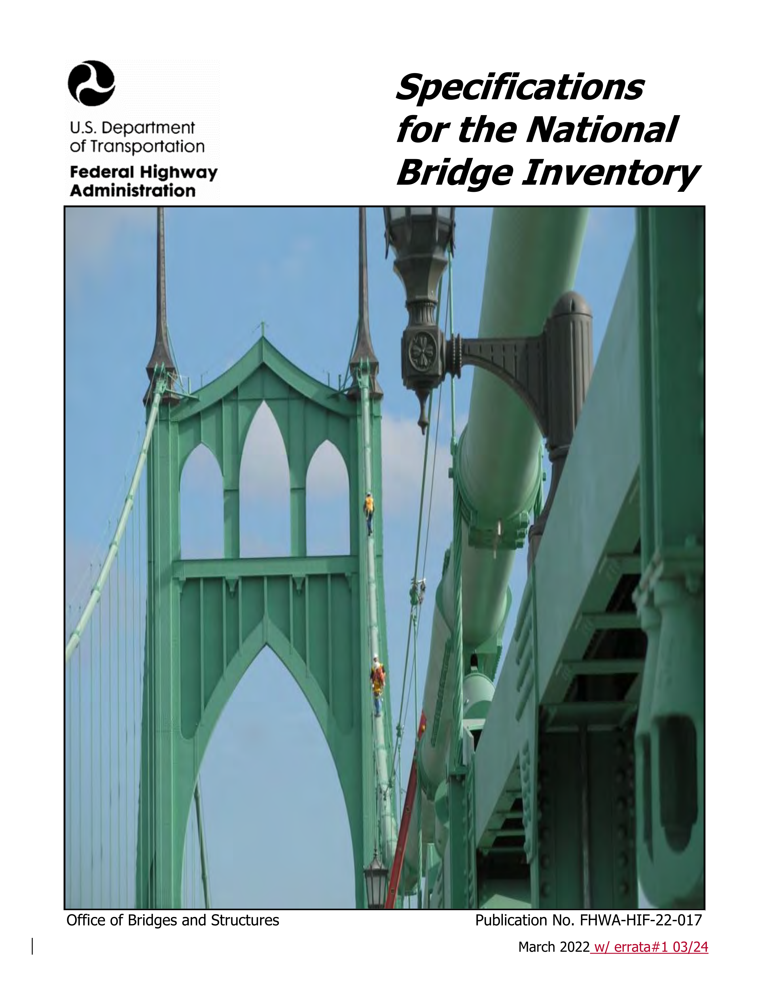
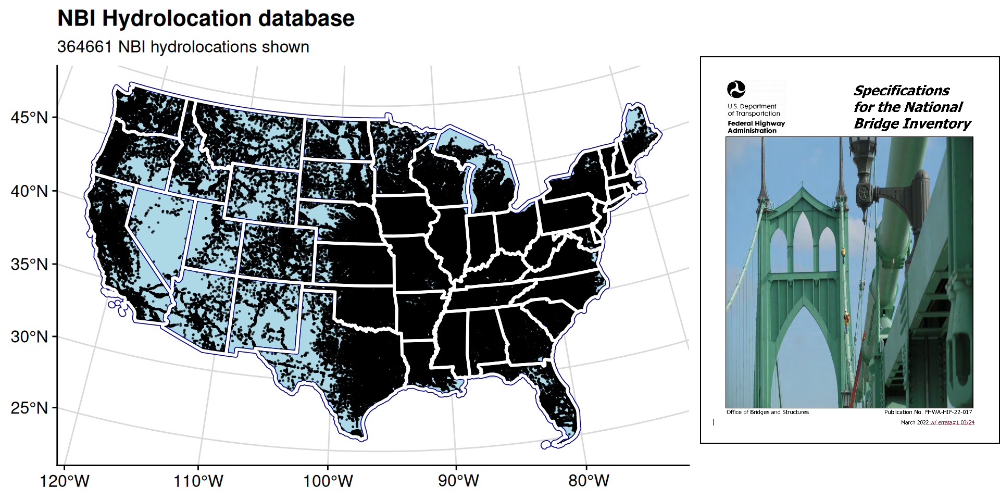

NBI Hydrolocation Considerations
Slide layout : This deck has one axis, use any key to advance.
: This deck is narrative-oriented
Items linked/bordered in green are cited in the tooltip on hover.
Items linked/bordered in blue are hyperlinked to relevant resources.
Photos are Allowed | Questions are Encouraged
: ~5 minutes | Last updated:08/25/2025 20:49:09
! PLEASE !
Interrupt me and ask questions or clarifications.
I’m here to talk with you now, not to these slides.
My preferred (FOSS) flavor of slidedecks, revealjs, has intuitive but none the less unconventional PowerPoint presentation controls:
F.
space, N, or the down arrow key, not the right arrow to advance slidesM to open to the menu, Press O for the slide deck overview, Press B to black out the presentation screen, Press S for a speaker view.Alt/Opt + click on the slide to zoom in. Increase text size with Alt/Opt + +, Alt/Opt + - to decrease, and Alt/Opt + 0 reset to the default scale.C to declare victory and head home.2The National Bridge Inventory (NBI) is our nations way of accounting for and coarsely administering the nations critical bridges. This inventory is used by state and federal partners and provides “the Recording and Coding Guide for the Structure Inventory and Appraisal of the Nation’s Bridges…” as administered by the US Federal Highway Administration (FHWA). This data can be accessed (in ASCII form) from here.
STATE_CODE_001 STRUCTURE_NUMBER_008 RECORD_TYPE_005A ROUTE_PREFIX_005B
<int> <char> <char> <int>
1: 1 00000000000S702 1 6
2: 1 00000000000S703 1 6
3: 1 0000000000M0022 1 8
4: 1 000000883039900 1 4
5: 1 000001014002450 1 3
6: 1 000001331700710 1 6
SERVICE_LEVEL_005C ROUTE_NUMBER_005D DIRECTION_005E HIGHWAY_DISTRICT_002
<int> <char> <int> <char>
1: 1 04007 0 09
2: 1 04003 0 09
3: 1 00000 0 00
4: 1 00088 0 02
5: 1 00101 0 02
6: 2 00000 0 02
COUNTY_CODE_003 PLACE_CODE_004 FEATURES_DESC_006A
<int> <int> <char>
1: 53 0 'PERDIDO CREEK'
2: 53 3004 'PERDIDO CREEK'
3: 113 19000 'UCHEE CREEK'
4: 59 0 'LITTLE BEAR CR. DAM SPW'
5: 79 0 'TENNESSEE RIVER'
6: 33 0 'TENNESSEE RIVER'
CRITICAL_FACILITY_006B FACILITY_CARRIED_007 LOCATION_009
<lgcl> <char> <char>
1: NA 'IRR BIA RTE 4007' '11.4KM NW OF ATMORE AL'
2: NA 'IRR BIA RTE 4003' 'ON LYNN MCGEE ROAD'
3: NA '101ST AIRBORNE RD' '3.4 KM S OF SUNSHINE RD'
4: NA 'CO. RD 88' 'LITTLE BEAR CR DAM'
5: NA 'SR 101' 'ON WHEELER DAM'
6: NA 'Res Rd' 'ON WILSON DAM'
MIN_VERT_CLR_010 KILOPOINT_011 BASE_HWY_NETWORK_012 LRS_INV_ROUTE_013A
<num> <num> <int> <char>
1: 99.99 1.500 0 0000000000
2: 99.99 1.100 0 0000000000
3: 99.99 0.000 0
4: 99.99 0.000 0
5: 4.52 39.429 0
6: 99.99 0.000 0
SUBROUTE_NO_013B LAT_016 LONG_017 DETOUR_KILOS_019 TOLL_020 MAINTENANCE_021
<int> <num> <num> <int> <int> <int>
1: 0 31061094 87341348 3 3 62
2: 0 31062020 87340890 3 3 62
3: NA 32174330 84583799 18 3 74
4: NA 34270600 87583100 16 3 67
5: NA 34485200 87225400 42 3 67
6: NA 34482400 87374000 6 3 67
OWNER_022 FUNCTIONAL_CLASS_026 YEAR_BUILT_027 TRAFFIC_LANES_ON_028A
<int> <int> <int> <int>
1: 62 9 1999 2
2: 62 9 2002 2
3: 74 9 1942 2
4: 67 8 1974 2
5: 67 6 1937 2
6: 67 17 1924 2
TRAFFIC_LANES_UND_028B ADT_029 YEAR_ADT_030 DESIGN_LOAD_031
<int> <int> <int> <char>
1: 0 50 2021 5
2: 0 159 2021 5
3: 0 375 2021 0
4: 0 205 2021 5
5: 0 5358 2021 4
6: 2 2841 2021 4
APPR_WIDTH_MT_032 MEDIAN_CODE_033 DEGREES_SKEW_034 STRUCTURE_FLARED_035
<num> <int> <int> <int>
1: 9.7 0 30 0
2: 6.5 0 0 0
3: 10.4 0 0 0
4: 11.6 0 99 0
5: 7.9 0 0 0
6: 7.9 0 0 0
RAILINGS_036A TRANSITIONS_036B APPR_RAIL_036C APPR_RAIL_END_036D HISTORY_037
<char> <char> <char> <char> <int>
1: 1 1 0 1 5
2: 1 1 1 1 5
3: 0 0 1 1 5
4: 1 1 1 1 5
5: 1 0 0 0 4
6: 1 1 1 1 1
NAVIGATION_038 NAV_VERT_CLR_MT_039 NAV_HORR_CLR_MT_040
<char> <num> <num>
1: 0 0.0 0.0
2: 0 0.0 0.0
3: 0 0.0 0.0
4: N 0.0 0.0
5: 1 17.9 33.5
6: 1 17.3 33.5
OPEN_CLOSED_POSTED_041 SERVICE_ON_042A SERVICE_UND_042B STRUCTURE_KIND_043A
<char> <int> <int> <int>
1: A 1 5 5
2: A 1 5 5
3: P 1 5 1
4: A 1 9 5
5: A 5 5 3
6: A 5 6 4
STRUCTURE_TYPE_043B APPR_KIND_044A APPR_TYPE_044B MAIN_UNIT_SPANS_045
<int> <int> <int> <int>
1: 5 0 0 1
2: 1 0 0 1
3: 4 0 0 3
4: 5 0 0 5
5: 10 3 2 2
6: 3 1 20 8
APPR_SPANS_046 HORR_CLR_MT_047 MAX_SPAN_LEN_MT_048 STRUCTURE_LEN_MT_049
<int> <num> <num> <num>
1: 0 9.7 14.7 15.0
2: 0 9.7 12.9 13.6
3: 0 7.3 18.3 43.0
4: 0 8.6 14.0 65.5
5: 143 6.0 53.3 1981.2
6: 78 6.0 46.9 1512.4
LEFT_CURB_MT_050A RIGHT_CURB_MT_050B ROADWAY_WIDTH_MT_051 DECK_WIDTH_MT_052
<num> <num> <num> <num>
1: 0.0 0.0 9.7 9.7
2: 0.3 0.3 9.1 9.8
3: 0.6 0.6 7.3 9.0
4: 0.0 0.0 8.7 10.5
5: 0.9 0.2 6.1 7.8
6: 1.7 0.5 6.1 8.3
VERT_CLR_OVER_MT_053 VERT_CLR_UND_REF_054A VERT_CLR_UND_054B
<num> <char> <num>
1: 99.99 N 0.00
2: 99.99 N 0.00
3: 99.99 N 0.00
4: 99.99 N 0.00
5: 4.52 N 0.00
6: 99.99 H 12.19
LAT_UND_REF_055A LAT_UND_MT_055B LEFT_LAT_UND_MT_056 DECK_COND_058
<char> <num> <num> <char>
1: N 0 0 7
2: N 0 0 7
3: N 0 0 5
4: N 0 0 7
5: N 0 0 5
6: H 6 0 5
SUPERSTRUCTURE_COND_059 SUBSTRUCTURE_COND_060 CHANNEL_COND_061
<char> <char> <char>
1: 5 7 6
2: 6 7 6
3: 5 6 6
4: 7 7 7
5: 6 5 8
6: 5 5 8
CULVERT_COND_062 OPR_RATING_METH_063 OPERATING_RATING_064
<char> <char> <num>
1: N 2 44.5
2: N 2 84.8
3: N 0 32.7
4: N 1 44.2
5: N 1 40.0
6: N 1 58.4
INV_RATING_METH_065 INVENTORY_RATING_066 STRUCTURAL_EVAL_067
<char> <num> <char>
1: 2 32.7 5
2: 2 35.1 6
3: 0 22.5 5
4: 1 26.6 6
5: 1 23.9 5
6: 1 35.0 5
DECK_GEOMETRY_EVAL_068 UNDCLRENCE_EVAL_069 POSTING_EVAL_070
<char> <char> <int>
1: 7 N 5
2: 6 N 5
3: 5 N 2
4: 6 N 5
5: 2 N 5
6: 2 9 5
WATERWAY_EVAL_071 APPR_ROAD_EVAL_072 WORK_PROPOSED_075A WORK_DONE_BY_075B
<char> <int> <int> <int>
1: 7 8 NA NA
2: 6 8 NA NA
3: 8 6 38 1
4: 9 6 NA NA
5: 8 8 31 1
6: 9 3 31 1
IMP_LEN_MT_076 DATE_OF_INSPECT_090 INSPECT_FREQ_MONTHS_091 FRACTURE_092A
<num> <int> <int> <char>
1: 0.0 221 24 N
2: 0.0 221 24 N
3: 52.8 1021 24 N
4: NA 622 24 N
5: 1981.2 621 24 Y24
6: 1512.4 622 24 Y24
UNDWATER_LOOK_SEE_092B SPEC_INSPECT_092C FRACTURE_LAST_DATE_093A
<char> <char> <int>
1: N N NA
2: N N NA
3: Y60 N NA
4: N N NA
5: N N 621
6: N N 622
UNDWATER_LAST_DATE_093B SPEC_LAST_DATE_093C BRIDGE_IMP_COST_094
<int> <int> <int>
1: NA NA 0
2: NA NA 0
3: 1021 NA 1
4: NA NA NA
5: NA NA 50000
6: NA NA 35000
ROADWAY_IMP_COST_095 TOTAL_IMP_COST_096 YEAR_OF_IMP_097
<int> <int> <int>
1: 0 0 2021
2: 0 0 2021
3: 1 2 2021
4: NA NA NA
5: 2000 60000 NA
6: 2000 45000 NA
OTHER_STATE_CODE_098A OTHER_STATE_PCNT_098B OTHR_STATE_STRUC_NO_099
<char> <int> <char>
1: 0
2: 0
3: NA
4: NA
5: NA
6: NA
STRAHNET_HIGHWAY_100 PARALLEL_STRUCTURE_101 TRAFFIC_DIRECTION_102
<int> <char> <int>
1: 0 N 2
2: 0 N 2
3: 0 N 2
4: 0 N 2
5: 0 N 2
6: 0 N 2
TEMP_STRUCTURE_103 HIGHWAY_SYSTEM_104 FEDERAL_LANDS_105
<char> <int> <int>
1: 0 1
2: 0 1
3: 0 0
4: 0 0
5: 0 0
6: 0 0
YEAR_RECONSTRUCTED_106 DECK_STRUCTURE_TYPE_107 SURFACE_TYPE_108A
<int> <char> <char>
1: 0 2 6
2: 0 2 6
3: 0 1 1
4: 0 1 0
5: 1962 1 0
6: 1958 1 5
MEMBRANE_TYPE_108B DECK_PROTECTION_108C PERCENT_ADT_TRUCK_109
<char> <char> <int>
1: 0 1 1
2: 0 8 1
3: 0 0 35
4: 0 0 5
5: 0 0 10
6: 0 0 8
NATIONAL_NETWORK_110 PIER_PROTECTION_111 BRIDGE_LEN_IND_112
<int> <int> <char>
1: 0 NA Y
2: 0 NA Y
3: 0 NA Y
4: 0 NA Y
5: 0 1 Y
6: 0 1 Y
SCOUR_CRITICAL_113 FUTURE_ADT_114 YEAR_OF_FUTURE_ADT_115 MIN_NAV_CLR_MT_116
<char> <int> <int> <num>
1: 8 59 2041 0
2: 7 200 2041 0
3: 5 400 2043 NA
4: 5 250 2041 NA
5: 5 8000 2041 NA
6: 5 3000 2041 NA
FED_AGENCY SUBMITTED_BY BRIDGE_CONDITION LOWEST_RATING DECK_AREA
<char> <int> <char> <char> <num>
1: Y 62 F 5 145.50
2: Y 62 F 6 133.28
3: Y 74 F 5 387.00
4: Y 67 G 7 687.75
5: Y 67 F 5 15453.36
6: Y 67 F 5 12552.92Hydrolocations store the source, identifier, and index of a critical location Points of Interest (POIs) aggregate co-located hydrolocations to singular network locations

Pre-clip is good! But, brittle tools and tool wiring are bad Suggestion: Input staging following an operational versioning schema Snapshot Versioning Utilitarian versioning - metadata changes Operational versioning - major version reconstruction Archival versioning - data overload!
# Read data out of the OSM database
bridges_data <- osmextract::oe_read(
path_to_roadlines,
layer = "lines",
boundary = sf::st_bbox(vpus[vpus$huc2==vpu_unit, ]),
boundary_type = "spat",
extra_tags = c("bridge", "highway"),
quiet = !is_verbose
)
# Pull out all lines tagged as "Bridge"
bridges_sf <- bridges_data[grepl("yes|viaduct|aqueduct|footbridge|suspension_bridge|movable_bridge|railway_bridge", bridges_data$bridge, ignore.case = TRUE) &
!is.na(bridges_data$bridge), ]
# Filter to valid bridge codes
nbi_sf <- nbi_sf[(nbi_sf$CULVERT_COND_062 == 'N' &
nbi_sf$SERVICE_UND_042B %in% c('5','6', '7', '8', '9') &
!(nbi_sf$SERVICE_ON_042A %in% c('2', '3', '9'))), ]